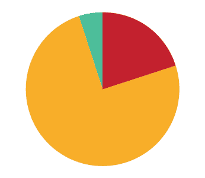

Background - 51% is my band. It's an Israeli alternative hip-hop super-group. 5 people make up the band (2 Avi's, 2 Yossi's and Shay), and each one of us has his own responsibilities. We do everything by ourselves: design, sound, music, lyrics, videos, managing and more. The name 51% derives from our desire to be an independent band, not bending to any big record company's caprice. Our music is not "easy listening", and we believe that Hip Hop's strength lies in the lyrics; so it's logical that we'll want people to listen carefully. Another reason we chose 51% as our name stems from the state music is in Israel- bad ! The slogan was "50% passion and 1% sanity. "We give out our albums for free to audience members at our shows. All you have to do is show up. We believe that a band's power arises from its crowd. We want to be close to our crowd, connect with it and grow from it.
Cover - On the cover we tried to correspond with the Hip-Hop cliché photography. In life, we are a lot different from this cliché, but it seems that other Israeli rapper do think they live in slums, and act as paradox regarding their life. Everyone that is familiar with us knows that we are a bunch of nerds doing "conscience" Hip-Hop regarding our adults "gray" life . On shows we usually dress up in nerd costumes: big-lens glasses, suspenders, pacifiers that reach our knees and so forth.
Inspired by some great movies like Reservoir Dogs and Snatch, we decided to form our own "gang" and created an alter ego for each one of us; we sought to radicalize our personalities. We shot the video in an abandoned building that we found covered with beautiful graffiti; I created the art created and did most of the shooting, except for those shots in which I appear. We included our family members in the shots to make it look like a crime family with relationships that deepen the characters.
Format - The booklet format was influenced by a computerized grid (widescreen). Our intention was to set it free on the internet. We also made 100 print copies to give to friends, associates and key people in the music industry / press.
Font & Icons – I created the font especially for "Zehu", and we used it throughout the campaign. The font is sharp and bold, built to use only on big sizes (above 24pt). Its shape was formed from geometric shapes and it deals with specific angles that create similar inner space in and between letters. It was my intention to create a contrast between foreground and background, between photos and text. As a rapper, I understand the need for lyrics in the album's booklet; sometimes it's just too fast to comprehend and people need assistance. In order to stay faithful to the graphic language that graffiti created on the street, I designed icons for each group member to help identify who sings which verse.
Web - "Zehu" is our 3rd album, and in making it, we tried to reach new levels, both in terms of the music and in terms of web distribution. We understand that social websites lead to the most downloads and views. So basically when we thought about the connection online we figured that it would be most appropriate to assemble everything to our site . Our website would gather all the information we spread online, and then people would be able to wander around in various platforms, "like", make comments and such, and it will all drain into our website for the convenience of people who prefer looking at websites . By making ourselves available on every online platform, we can assure that our fans stay updated on our activities.
51% members: Avi Ashkenazi, Avi Golzman, Yossi "Joseph" Cohen, Yossi Shamrik a.k.a. Taboo+ and Shay Fishman.
Project finished on April, 2010

{kind=link}
{kind=link}